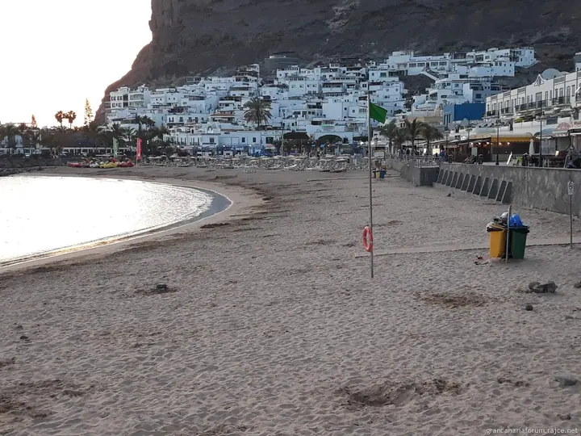
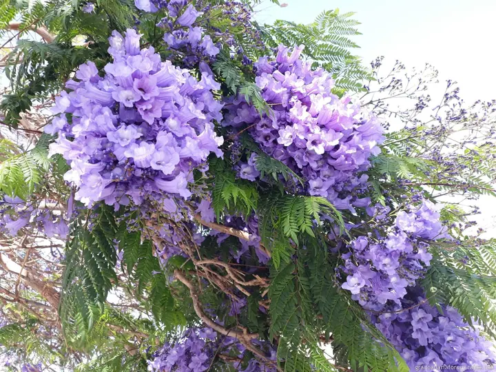
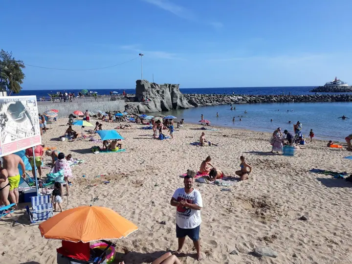
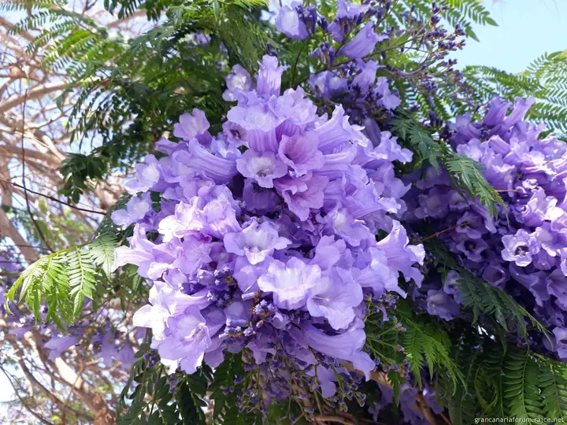
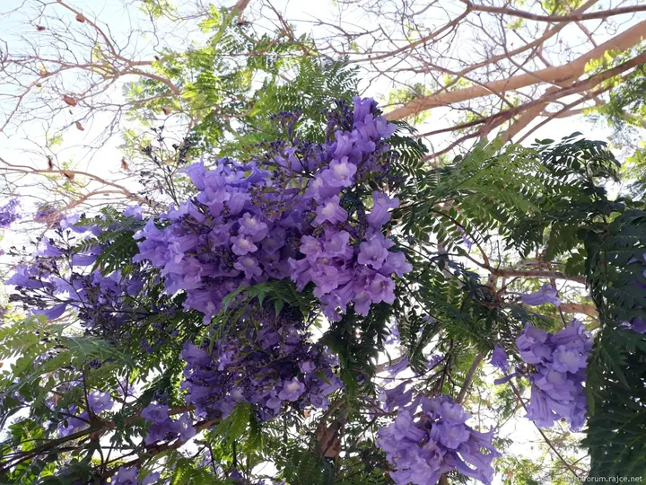
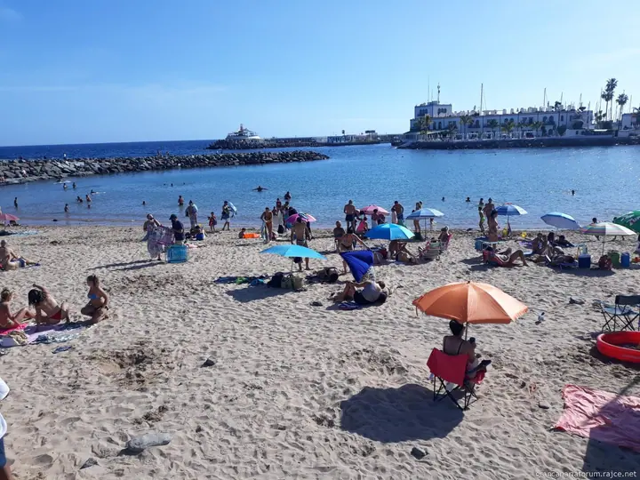
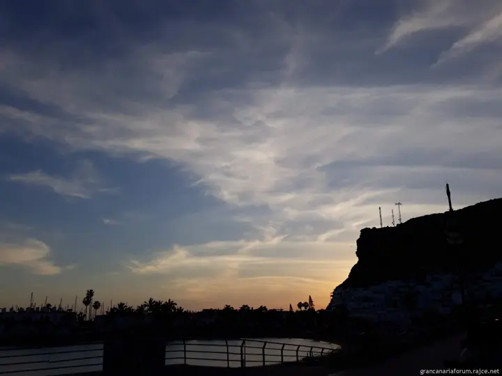
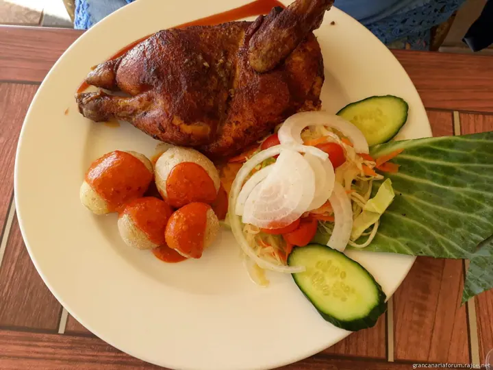
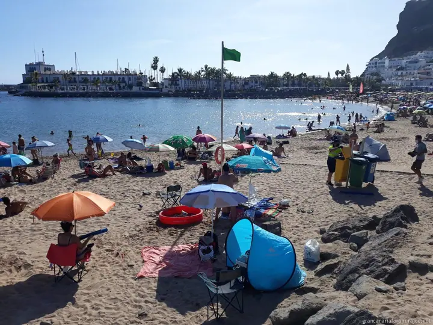

Gran Canaria Fórum
Gran Canaria, ostrov věčného jara
Zeptat se na termín →(01) Ahoj
Jmenuji se Gran Canaria Fórum a jsem česky psaný web o ostrově Gran Canaria. Fotím jeho pláže , kvetoucí jakarandy i večery nad přístavem . Návštěvníkům ostrova nabízím výlety, dopravu a praktické rady.
(02) Co fotím
Focení, které má příběh
Co nabízím
-
01
Individuální výlety po ostrově
Vyberete si z pestré řady výletů po ostrově, vždy s českým privátním doprovodem. Jezdíme na kávovníkovou plantáž, do vinařství, do botanické zahrady i za pěší turistikou.
↗ -
02
Doprava z letiště a po ostrově
Zajistím dopravu z letiště do hotelu a zpět. Odvezu vás také na pláže a do aquaparků.
↗ -
03
Výlety na moře a za delfíny
Nabízím výlety na moře a za delfíny i další aktivity na vodě. Gran Canaria je ráj pro milovníky vodních sportů.
↗ -
04
Na ostrov bez cestovky
Když pojedete bez cestovní kanceláře, nahradím vám delegáta a přidám k tomu individuální přístup. Po celou dobu pobytu jsem vám nablízku.
↗
(04) Postup
Jak to probíhá
Od první zprávy po hotovou galerii.
-
1
Krok 1 z 4
Napište mi
Pošlete mi termín pobytu a co byste na ostrově rádi zažili. Ozvat se můžete e-mailem, telefonem nebo přes formulář.
-
2
Krok 2 z 4
Domluvíme program
Společně vybereme výlety, dopravu a aktivity podle vás. Nemusíte se přizpůsobovat skupině ani pevnému programu.
-
3
Krok 3 z 4
Přílet a doprava
Vyzvednu vás na letišti a odvezu do hotelu. Na konci pobytu vás zase dovezu zpátky.
-
4
Krok 4 z 4
Poznáváte ostrov
Vyrazíte na výlety s českým privátním doprovodem, na moře, na pláže nebo do vnitrozemí. Po celou dobu jsem vám k dispozici.
Není tu ani sníh, ani déšť, je to země věčné svěžesti
(05) Za objektivem
Ahoj, jsem Gran
Gran Canaria je třetí největší z Kanárských ostrovů a říká se jí miniaturní kontinent. Najdete tu zelený sever, vyprahlý jih, písečné duny, skalní útvary i hluboké lesy ve středu ostrova. To všechno fotím a sdílím na webu, na Rajčeti a na sociálních sítích.
Můj web ale není jen informační. Chci sdružovat všechny fanoušky ostrova a umožnit jim, aby se na něm sami podíleli. Proto mám diskuzní fórum, fotoalbum s fotkami čtenářů a klientů a blog ze života na Gran Canaria.
Pokud jedete bez cestovky, rád vám pomůžu. Zajistím dopravu z letiště, zorganizuji individuální výlety s českým doprovodem a po dobu pobytu budu stále nablízku.
- 01Fotím na Gran Canaria
- 02Na Rajčeti mám přes 4 000 fotek
- 03Píšu blog ze života na ostrově
- 04Vedu diskuzní fórum o ostrově
- 05Jsem na YouTube i TikToku
Gran
Gran Canaria Fórum · Fotografie a služby pro návštěvníky Gran Canaria
Mluví průvodce na výletech česky?
Ano, výlety po ostrově jsou vždy s českým privátním doprovodem.
Musím jet s cestovní kanceláří?
Nemusíte. Pomohu vám zařídit cestu na vlastní pěst a na ostrově vám nahradím delegáta cestovky.
Zajistíte dopravu z letiště?
Ano, nabízím dopravu z letiště do hotelu a zpět i dopravu na pláže a do aquaparků.
Kde najdu aktuální informace o ostrově?
Na webu grancanariaforum.cz najdete počasí ve všech letoviscích, bleskové zprávy, webovou kameru z Maspalomas, kalendář akcí i diskuzní fórum.
(07) Kontakt
Plánujete cestu na ostrov?
Napište pár vět o tom, co si představujete, a termín, který se vám hodí.
- Web grancanariaforum.cz
- Gran Canaria